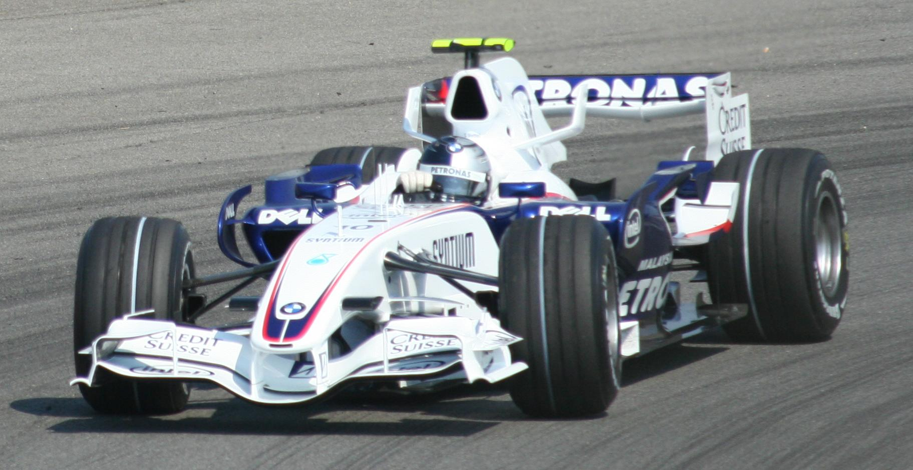

Volume
Early Career
Junior category days
Vettel began karting at the age of three, and began racing in karts series in 1995 at the age of eight. He was accepted into the Red Bull Junior Team in 1998, and won various titles, such as the Junior Monaco Kart Cup in 2001. Vettel was promoted to open-wheel cars in 2003, and was given a chance by Derrick Walker to test a Reynard Motorsport Champ Car in a two-day private test at the Homestead road course. A year later, he won the 2004 Formula BMW ADAC championship with 18 victories from 20 races.
Vettel drove for ASL Mücke Motorsport in the 2005 Formula 3 Euro Series. He was placed fifth in the final standings with 63 points and won the Rookie Cup. He tested for the Williams Formula One team later that year as a reward for his Formula BMW success. Vettel then went on to test for the BMW Sauber Formula One team.
Vettel was promoted to test driver for BMW Sauber in 2006, and participated in the 2006 Formula 3 Euro Series, finishing as runner-up. He also competed in the 2006 Formula Renault 3.5 Series, where he finished first and second at Misano in his first two races. In the next round at Spa-Francorchamps, his finger was almost sliced off by flying debris following an accident, and he was expected to be out for several weeks. Nevertheless, he managed to compete in the 2006 Masters of Formula 3 at Zandvoort the following weekend, where he finished in sixth place.
Vettel competed in the 2007 Formula Renault 3.5 Series, and took his first win at the Nürburgring. He led the championship when he was called up permanently by the BMW Sauber Formula One team.
BMW Sauber (2006–2007)
Test driver and debut
Vettel became BMW Sauber's third driver at the 2006 Turkish Grand Prix, when former incumbent Robert Kubica replaced Jacques Villeneuve as second driver for the 2006 Hungarian Grand Prix. On his testing debut, Vettel set the fastest time in the second Friday free practice. Vettel became the then-youngest Formula One driver to participate in a Grand Prix weekend at 19 years and 53 days. He also set a record for collecting his first fine in nine seconds into his career, as Vettel exceeded the pitlane speed limit on the way to the track. In his second testing session at the 2006 Italian Grand Prix, he set the fastest time in both Friday practice sessions.
Vettel was confirmed as BMW's test driver for 2007. Following Kubica's crash at the 2007 Canadian Grand Prix, Vettel was named his replacement at the 2007 United States Grand Prix. He started in seventh position and finished in eighth to become the then-youngest driver to score a point in Formula One.